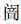

于非

画师的病故是全国画界的损失！画师多才多艺，能画、能写、能刻印。善莳花、豢鸽、养鱼，并善于鉴赏古器。从养花养鸽等等得来的知识，都运用在绘画上，所以他特精绘事，尤精于花卉翎毛。
画师在施彩运墨方面，多遵宋元秘法，可是构图状物，一本真实，所以他笔下的一花一木既饶古趣，又有所创造。他极重写生。即在晚年，虽已成名，可是还时刻留神观察百卉虫鸟，以求精确。每逢公园牡丹盛开，或闻某处有菊花展览，他必去详为赏览，勾画底稿多幅。每值我家菊开，画师必来，徘徊花间，见细瓣如针，或色微韵秀，频谓“这怎么画呢？”事实上，他并不畏难；他千方百计地想办法，把最不易摹拟的画了出来。这便是创造，因为前人没有这么画过。
他善养鸽，著有专书。为了保卫世界和平的宣传，他画过各种各式的鸽子。对鸽子的姿态，他有多年的观察。可是，有一次朋友们求他作大幅的翔鸽图，他为了难。平日放鸽，他只能仰观。他没从上俯视过鸽子如何飞翔。于是，他就到城楼上去俯视鸽群的起落，而后动笔描画。这种严肃的态度，使许多青年画家受到感动。
他坚执日课，每日必画。他画工笔画，费时间较多。可是在解放后，他有多少作品啊。这证明他是如何精勤，至老不懈。他只住着三间小屋，但是他不因环境局促，而稍弛怠。绘画就是他的生命，一拿起笔来，他就得到无穷的乐趣，日夕不息地把春花秋卉赠给广大群众。是的，他的作品是雅俗共赏，受到普遍称赞的。到了晚年，他笔下的群芳特别明艳。他说：万紫千红，争奇斗艳，才足以配合新社会的新气象。
是的，他热爱新社会。他衷心感激党对他个人与对传统绘画的关切与爱护。为表示他个人对党的感激，他刻了一块图章，文曰“再生”。当他卧病医院的时候，他还念念不忘的就是画家要靠近党，在党的领导下发展国画事业。
入医院之后，他极为乐观。他相信自己会恢复健康，会创作出更多更好的作品来。可是，病痛夺去了他的生命，现在正在画舫斋展出的他的那幅极精彩的“牡丹鸽子”遂成绝笔！
非 先生，安息吧！您的独具风格的作品会流传下去，您的徒弟们不但会继承您的画法，成为流派，而且也会发扬您的勤学苦练的精神，毕生不懈地争取青出于蓝而胜于蓝的成就。您的画界朋友们现在团结得很好，而且会更好，国画的发展的确可以作到百花齐放，推陈出新！安息吧，非 先生！我们的国家正在百废俱兴，日趋富强，我们的美术事业也随之而欣欣向荣，生机活跃！
原载1959年7月7日《人民日报》